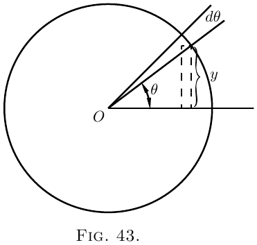
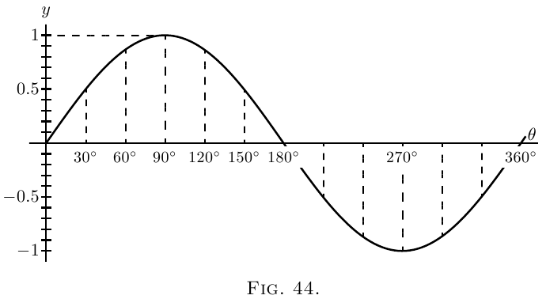
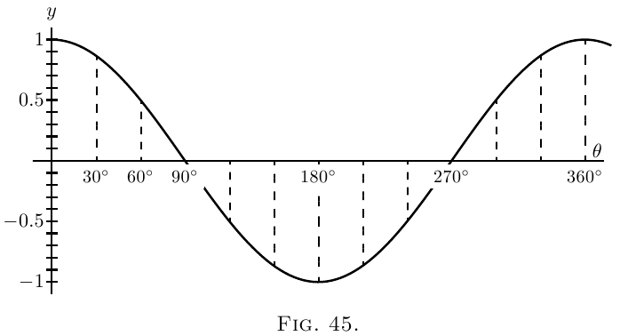

希腊字母通常用来表示角度，我们将用字母 \(\theta\) (“theta”) 来表示任何可变角度。
我们来研究函数：
\[
y= \sin \theta.
\]

我们需要研究的是 \(\dfrac{d(\sin \theta)}{d \theta}\) 的值；换句话说，当角度 \(\theta\) 变化时，我们需要找到正弦增量和角度增量之间的关系，两个增量本身都可以看作无限小。请参考图 43，如果圆的半径为 1，那么 \(y\) 的高度就是正弦值，而 \(\theta\) 是角度。如果假设 \(\theta\) 增加了一个小角度 \(d \theta\)，即一个角元素，那么 \(y\) 的高度（即正弦值）将增加一个小元素 \(dy\)。新高度 \(y + dy\) 是新角度 \(\theta + d \theta\) 的正弦值，用方程表示为：
\[
y+dy = \sin(\theta + d \theta);
\]
从中减去第一个方程可以得到：
\[
dy = \sin(\theta + d \theta)- \sin \theta.
\]
右边的量是两个正弦值之差，而三角学的书告诉我们如何处理这个问题。根据三角公式，对于任意两角 \(M\) 和 \(N\)，有：
\[
\sin M - \sin N = 2 \cos\frac{M+N}{2}·\sin\frac{M-N}{2}.
\]
如果令 \(M = \theta + d \theta\) 和 \(N = \theta\)，我们可以写为：
\begin{align*}
dy &= 2 \cos\frac{\theta + d\theta + \theta}{2}
· \sin\frac{\theta + d\theta - \theta}{2},\\
dy &= 2\cos(\theta + \tfrac{1}{2}d\theta)
· \sin\tfrac{1}{2} d\theta.
\end{align*}
如果将 \(d \theta\) 视为无限小，那么在极限情况下，我们可以忽略 \(\tfrac{1}{2} d \theta\) 相对于 \(\theta\) 的影响，并将 \(\sin\tfrac{1}{2} d \theta\) 视为 \(\tfrac{1}{2} d \theta\)。于是方程变为：
\begin{align*}
dy &= 2 \cos \theta × \tfrac{1}{2} d \theta; \\
dy &= \cos \theta · d \theta, \\
\dfrac{dy}{d \theta} &= \cos \theta.
\end{align*}
图44和图45按比例显示了 \(y = \sin \theta\) 和 \(\dfrac{dy}{d\theta} = \cos \theta\) 在对应 \(\theta\) 值下的曲线。


接下来处理余弦。
设：\(y=\cos \theta\)。
由于 \(\cos \theta=\sin\left(\dfrac{\pi}{2}-\theta\right)\)，
因此：
\begin{align*}
dy &= d\left(\sin\left(\frac{\pi}{2} - \theta\right)\right) \\
&= \cos\left(\frac{\pi}{2} - \theta\right) × d(-\theta) \\
&= \cos\left(\frac{\pi}{2} - \theta\right) × (-d\theta) \\
\frac{dy}{d\theta} &= -\cos\left(\frac{\pi}{2} - \theta\right).
\end{align*}
因此：
\[
\frac{dy}{d\theta} = -\sin \theta.
\]
最后处理正切。设：
\begin{align*}
y &= \tan \theta, \\
dy &= \tan(\theta + d\theta) - \tan\theta. \\
\end{align*}
展开（根据三角学书籍）：
\begin{align*}
\tan(\theta + d\theta)
&= \frac{\tan\theta + \tan d\theta}
{1 - \tan\theta·\tan d\theta}; \\
dy &= \frac{\tan\theta + \tan d\theta}
{1-\tan\theta·\tan d\theta} - \tan\theta \\
&= \frac{(1 + \tan^2\theta)\tan d\theta}
{1-\tan\theta·\tan d\theta}.
\end{align*}
当 \(d\theta\) 无限减小时，\(\tan d\theta\) 等于 \(d\theta\)，而 \(\tan\theta \cdot d\theta\) 相对于 \(1\) 可以忽略，因此表达式简化为：
\begin{align*}
dy &= \frac{(1+\tan^2 \theta)\, d\theta}{1}, \\
\frac{dy}{d\theta} &= 1 + \tan^2\theta, \\
\frac{dy}{d\theta} &= \sec^2 \theta.
\end{align*}
总结结果如下：
| \(y\) |
\(\dfrac{dy}{d\theta}\) |
| \(\sin\theta\) |
\(\cos\theta\) |
| \(\cos\theta\) |
\(-\sin\theta\) |
| \(\tan\theta\) |
\(\sec^2 \theta\) |
有时，在机械和物理问题中，例如在简谐运动和波动中，我们需要处理角度随时间成比例增加的情况。例如，若 \(T\) 是一个完整周期或绕圆一周的时间，那么由于整个圆的角度为 \(2\pi\) 弧度（或 \(360°\)），在时间 \(t\) 内经过的角度为：
\[
\theta = 2\pi\frac{t}{T},
\]
以弧度计，或
\[
\theta = 360\frac{t}{T},
\]
以角度计。
如果频率（每秒的周期数）用 \(n\) 表示，那么 \(n = \dfrac{1}{T}\)，于是可以写为：
\[
\theta=2\pi nt.
\]
此时，正弦函数可以表示为：
\[
y = \sin 2\pi nt.
\]
现在，如果我们希望知道正弦函数随时间的变化情况，需要对时间 \(t\) 求导，而不是对 \(\theta\) 求导。为此，我们需要使用在第9章中解释的方法，将其拆分为：
\[
\frac{dy}{dt} = \frac{dy}{d\theta} · \frac{d\theta}{dt}.
\]
显然，\(\dfrac{d\theta}{dt}\) 等于 \(2\pi n\)，因此：
\begin{align*}
\frac{dy}{dt} &= \cos \theta × 2\pi n \\
&= 2\pi n · \cos 2\pi nt. \\
\end{align*}
类似地，可以得出：
\[
\frac{d(\cos 2\pi nt)}{dt} = -2\pi n · \sin 2\pi nt.
\]
正弦或余弦的二阶导数
我们已经看到，当 \(\sin \theta\) 对 \(\theta\) 求导时得到 \(\cos \theta\)；而 \(\cos \theta\) 对 \(\theta\) 求导时得到 \(-\sin \theta\)。用符号为：
\[
\frac{d^2(\sin \theta)}{d\theta^2} = -\sin \theta.
\]
因此，我们得到一个有趣的结果：如果对某个函数求两次导数，会得到与原函数相同但符号相反的结果。
同样的结论也适用于余弦函数：对 \(\cos\theta\) 求导得到 \(-\sin\theta\)，而对 \(-\sin\theta\) 求导又得到 \(-\cos\theta\)，即：
\[
\frac{d^2(\cos\theta)}{d\theta^2} = -\cos\theta.
\]
正弦和余弦是唯一一种二阶导数等于（且符号相反于）原函数的函数。
示例
通过所学的内容，我们现在可以对更复杂的表达式求导。
(1) \(y=\arcsin x\).
如果 \(y\) 是正弦值为 \(x\) 的弧度，则 \(x = \sin y\) 。
\[
\frac{dx}{dy}=\cos y.
\]
从反函数回到原函数，可以得到：
\begin{align*}
\frac{dy}{dx}
&= \frac{1}{\;\dfrac{dx}{dy}\;} = \frac{1}{\cos y}. \\
\cos y
&= \sqrt{1-\sin^2 y}=\sqrt{1-x^2}; \\
\frac{dy}{dx}
&= \frac{1}{\sqrt{1-x^2}},
\end{align*}
这是一个相当意外的结果。
(2) \(y=\cos^3 \theta\).
这与 \(y =(\cos \theta)^3\) 是同一个表达式。
令 \(\cos\theta=v\)，则 \(y=v^3\)，并且 \(\dfrac{dy}{dv}=3v^2\)。
\begin{align*}
\frac{dv}{d\theta} &= -\sin\theta.\\
\frac{dy}{d\theta} &= \frac{dy}{dv} × \frac{dv}{d\theta}
= -3 \cos^2 \theta \sin\theta.
\end{align*}
(3) \(y=\sin(x+a)\).
令 \(x+a=v\)，则 \(y=\sin v\);
\begin{align*}
\frac{dy}{dv} &= \cos v;\\
\frac{dv}{dx} &= 1 \\
\frac{dy}{dx} &= \cos(x+a).
\end{align*}
(4) \(y=\log_\epsilon \sin \theta\).
令 \(\sin\theta=v\)，则 \(y=\log_\epsilon v\).
\begin{align*}
\frac{dy}{dv} &= \frac{1}{v};\quad \frac{dv}{d\theta}=\cos\theta;\\
\frac{dy}{d\theta} &= \frac{1}{\sin\theta} × \cos\theta = \cot\theta.
\end{align*}
(5) \(y=\cot\theta=\dfrac{\cos\theta}{\sin\theta}\).
\begin{align*}
\frac{dy}{d\theta}
&= \frac{-\sin^2\theta - \cos^2 \theta}{\sin^2 \theta}\\
&= -(1+\cot^2 \theta) = -\text{cosec}^2 \theta.
\end{align*}
(6) \(y=\tan 3\theta\).
令 \(3\theta=v\)，则 \(y=\tan v\)，并且 \(\dfrac{dy}{dv}=\sec^2 v\)。
\begin{align*}
\frac{dv}{d\theta} &= 3;\\
\frac{dy}{d\theta} &= 3 \sec^2 3\theta.
\end{align*}
(7) \(y = \sqrt{1+3\tan^2\theta}\); \(y=(1+3 \tan^2 \theta)^{\frac{1}{2}}\).
令 \(3\tan^2\theta=v\)，则：
\begin{align*}
y &= (1+v)^{\frac{1}{2}};\\
\frac{dy}{dv} &= \frac{1}{2\sqrt{1+v}}
\end{align*}
若令 \(\tan \theta = u\)：
\begin{align*}
v &= 3u^2;\quad \frac{dv}{du} = 6u;\quad \frac{du}{d\theta} = \sec^2 \theta; \\
\frac{dv}{d\theta}
&= 6 (\tan \theta \sec^2 \theta) \\
\frac{dy}{d\theta}
&= \frac{6\tan\theta \sec^2\theta}{2\sqrt{1 + 3\tan^2\theta}}.
\end{align*}
(8) \(y=\sin x \cos x\)。
\begin{align*}
\frac{dy}{dx}
&= \sin x(-\sin x) + \cos x × \cos x \\
&= \cos^2 x - \sin^2 x.
\end{align*}